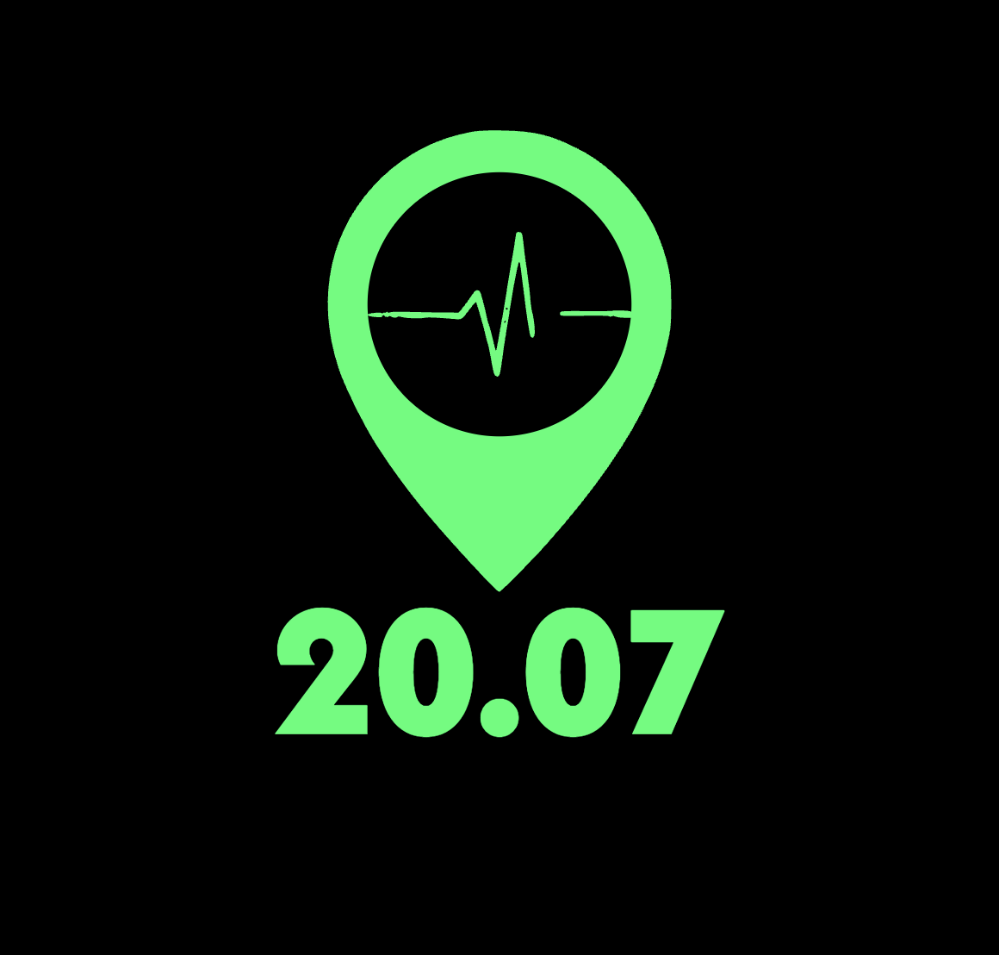
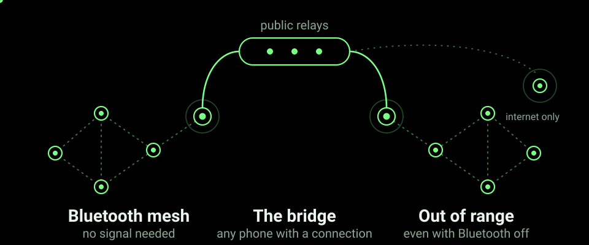

Find your group, call for help and share photos with no cell signal and no internet. Phones relay for each other over Bluetooth, and an optional internet bridge carries your group further, even with Bluetooth off. Free, open source, no accounts.
Cellular networks assume normal conditions. They break down in a recurring set of situations, whether the network is overloaded by too many people or there was never much of it. In each case the same needs return: find your group, call for help, get proof of what is happening out.
Floods, earthquakes, cyclones, landslides and wildfires take towers and power down first. Keep your family or team in contact when the usual networks are gone.
Volunteers, search-and-rescue teams and neighbourhood responders can see each other on a live radar and raise an SOS that is relayed ahead of everything else.
Festivals, stadiums, rallies and pilgrimages overload a single cell tower. Phone-to-phone relaying keeps a group connected when the network is full.
In a dense crowd you lose people in seconds. Walk toward the dot instead of reading a map, and call for help that hops phone to phone.
Power cuts, hiking, camping and expeditions with no towers nearby: offline communication that needs no SIM, no data plan and no infrastructure.
Where networks are throttled, jammed or not trusted, there is no account to block and no central server to switch off.
Three core tools, plus an optional bridge when any phone has a connection.
A radar of your group around you: walk toward the dot. Works on Bluetooth alone, with a hot/cold fallback if you decline location.
An authenticated distress alert that hops from phone to phone, with distance shown in hops, and is sent ahead of all other traffic.
Encrypted incident photos and files up to 400 KB relay across the mesh, so proof does not live on just one phone.
A mate who dropped out shows as "name, 14 min ago, 3.2 km NE" for up to six hours, held in memory only.
One off-by-default switch. A phone with Wi-Fi or mobile data carries your group's encrypted traffic to mates out of Bluetooth range, even with Bluetooth off.
Phones outside your group, with the switch on, can carry your sealed frames onward. They see sizes and timing, never content.

One QR code creates a group. No owner is tied to it: removing one person does not expose or kill the group.
Every phone, even ones outside your group, can carry your traffic that is architecturally opaque to them, not just "encrypted so please don't look".
Your Bluetooth advertising ID changes every 60 seconds, so passive scanning sees a changing, meaningless value.
Positions live in memory only and are gone when the app is force-quit.
SOS first, files last, slow-down under congestion and per-hour limits protect relays. Simulated up to 10,000 users.
One switch shows the home-screen icon and notification as a plain utility app instead.
20.07 lets phones in your group talk directly over Bluetooth, hopping from phone to phone with no cell tower, SIM or internet. You get a live radar of your group, messages, SOS alerts and photo sharing.
Yes. The Bluetooth mesh needs neither. The optional Internet reach switch lets any phone that has a connection carry your group's encrypted messages further.
Phones relay for each other, so your group stays connected when the tower is overloaded. SOS alerts are sent first, and the app slows its own background traffic under load.
Everything is encrypted with a key only your group holds; there are no accounts and no servers of ours. With Internet reach on, public relays can see your phone's internet address, message sizes and timing, but not content. Read the privacy policy.
Free and open source (MIT). Not on the Play Store: download the signed APK above, allow installs from that source once, and share the file with friends offline.
A group suits a few to several people who stay together, and every phone with the app can relay for others. Large-crowd behaviour is tested in simulation, not yet in the field. See the known limitations.
Download 20.07 v0.10.1 (signed APK), open it, and allow installs from that source once in Android settings. Needs Android 8.0 or later. Details: README.
Build it yourself: git clone the repo, then from 20.07/android/ run ./gradlew assembleDebug. Needs JDK 17 and the Android SDK.